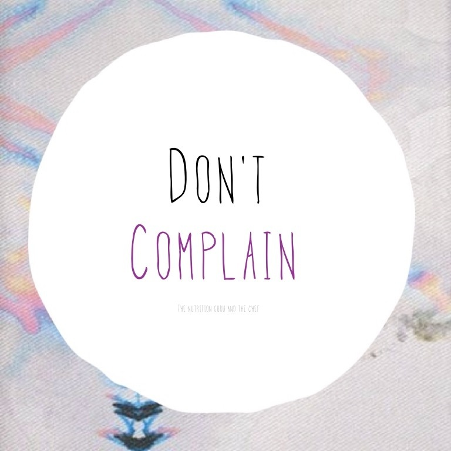

CHƯƠNG 1: CON NGƯỜI THẬT LẠ
Than phiền
Hẳn là trong cuộc sống ai cũng một lần hoặc nhiều hơn hai lần than phiền kiểu như: “Ôi, chán quá”,“Ôi, tôi khổ quá”,“Trời ơi, sao mình cứ nghèo thế này!!”,…..
Tôi cũng vậy, lúc trước tôi cũng có những câu than thở kiểu như: “Trời ơi, sao mình có 8 điểm môn văn thôi vậy!”,“Ôi, mình đói bụng quá”,“Ôi, hết tiền rồi mà chưa tới tuần lãnh lương nữa”,…. Thế đấy.
Và rồi ngày càng trôi qua, tôi nhận thấy rằng than thở kiểu như vậy chẳng giúp được gì cả, khi còn nhỏ đôi khi một số chuyện than thở để cho ba mẹ biết rằng mình muốn gì rồi tùy tình huống mà có được đáp ứng hay không, nhưng lớn cái đầu ra rồi, than thở cũng chỉ có mình nghe thấy mà thôi. Nhận ra điều đó, tôi không than thở nữa, nếu có cũng chỉ là than thầm trong lòng rồi không nói cho ai biết cả.
Rồi tôi đi tìm cách giải quyết cái than thở của mình. Đầu tiên, phải tìm cái nguyên nhân khiến tôi phải than thở như thế, mọi chuyện trên đời này đều có nguyên nhân của nó cả, ngay cả cái đau của bạn cũng do một nguyên nhân nào đó mà đến, chẳng chuyện gì khi không nó có thể xảy ra được khói không có lửa thì làm sao xuất hiện (Tuy giờ có máy tạo khói, nhưng trong cuộc sống không có lửa đố thánh nào làm xuất hiện được khói, khói nhá, không phải hơi nước của nước đá ngoài trời đâu á). Sống là một chuỗi hoạt động có tác động qua lại lẫn nhau và lan tỏa ra xã hội hoặc lưu dấu ấn trong lịch sử cho nên, tôi nghĩ rằng, chuyện nào cũng có nguyên nhân của nó và việc đầu tiên để giải quyết cái lời than phiền đáng ghét kia chính là tìm thấy nguyên nhân của vấn đề. Sau khi đã tìm ra nguyên nhân của vấn đề thì ta có thể tìm cách giải quyết nguyên nhân của vấn đề và thế là sự ảnh hưởng tác động qua lại với nhau sẽ giải quyết cái lời than phiền đó của ta. Cơ mà, cũng có những nguyên nhân không thể giải quyết được do ông thần thời gian đã không chịu quay lại cho chúng ta một cơ hội để giải quyết nó, thế đối với những nguyên nhân không thể giải quyết được thì ta nên sao.
Tôi từng bị loét dạ dày và tôi luôn than phiền về cơn đau của mình (Do còn đang tuổi chưa trưởng thành, nên tôi than thành tiếng suốt), ba mẹ tôi cho tôi đi khám bác sĩ và được chẩn đoán là loét dạ dày (Lúc đó tôi nghe mà hết hồn ấy) vị bác sĩ hiền từ hỏi tôi có ăn uống đúng bữa không? Cái tôi nhớ ra là hình như từ khi bắt đầu lên lớp 6 tới lúc đó tôi toàn dành tiền ăn trưa trong những giờ “bắn CF”, hay “Siêu quậy City” hết rồi nên chỉ còn vài ba đồng cho một ly nước là xong bữa trưa, đôi khi có cả buổi sáng luôn á (Do nhà tôi xa trường mà tôi lại thích ở lại trường khi học hai buổi, làm biếng đạp xe đi về trong cái trời nắng chói trang ấy chứ, nên mẹ cứ đưa cho phí tiêu cả luôn việc ăn trưa ở trường), mà cũng chỉ là nhớ trong đầu thôi, chứ nói ra lúc đấy mẹ tôi đang đứng sau lưng mà nghe được chắc phải cuốc xe “hai cẳng” về nhà vào mỗi trưa quá nên tôi trả lời “Có”, vị bác sĩ nhìn gương mặt tôi cười như nói rằng “Hay hak, chú biết rồi đấy” rồi nói việc bỏ bữa, một phần ảnh hưởng rất lớn đến hệ tiêu hóa mà cái dạ dày của tôi là điển hình cho nó, nhưng hiện tại chỉ ở mức nhẹ, uống thuốc và ăn uống điều độ là khỏi thôi. (May quá lúc đó hình như mẹ tôi không biết nên không nói gì cả và cũng chẳng bắt phải cuốc xe hai cẳng về nhà giữa trưa luôn! Hên thật).
Thế đấy, tôi chẳng thể quay lại quá khứ để mua một hộp cơm hay một ổ bánh mì thay vì vài tiếng trong quán net cả nên dù đã biết nguyên nhân, tôi lại không thể thay đổi nguyên nhân được. Nói thế không có nghĩa là bỏ mặc mà khi đã phát hiện nguyên nhân mà ta không thể thay đổi được thì phải lấy nó làm bài học, sau này không tìm đến cái nguyên nhân gây khiến mình phải than phiền nữa.
Rồi sau khi giải quyết được nguyên nhân hay học được từ cái nguyên nhân đó rồi, tôi lưu lại để đó khi nào gặp chuyện tương tự mà lấy nó ra coi lại tránh xa hay làm một cách khác để không phải than phiền nữa.
Nói thì dễ nhưng trong cuộc sống tôi đã gặp nhiều người dù đã than phiền về điều gì đó n > 2 lần nhưng vẫn chẳng thay đổi gì. Không phải họ không biết những điều tôi nói mà họ không làm được. Tôi nghĩ mình cũng biết được điều đó vì một số lần tôi cũng chẳng thể thay đổi được gì khi chuyện này đã tái diễn hằng n lần và kết thúc mỗi lần với lời tự than thầm hoặc tự trách của tôi. Thế là tôi tự hỏi rằng tại sao không thể thay đổi?
Qua nhiều quá trình trong cuộc sống, qua nhiều ngày trong đời tôi biết được là vì cơ bản đó là thói quen của một người. Một thứ khá đáng sợ mà sau này tôi sẽ nói về nó ở một chương hoặc một mục nào đó và nó lặp lại chu kỳ than phiền của ta.
Có nhiều bạn nghĩ rằng: “Than phiền một chút cho ta bớt căng thẳng thì có hại gì âu mà phải thay đổi”, “Chỉ là than chút thôi mà”,….. Umh, tôi cũng từng nghĩ thế đấy, chỉ 2 đến 3 câu than cảm (Lặp lại nhiều lần) thôi mà có ảnh hưởng gì đến hòa bình thế giới âu mà sao cứ phải lo nghĩ nhỉ. Tuy vây, có khá nhiều ảnh hưởng của việc than phiền đến cuộc sống của chúng ta đấy, hữu hình hay vô hình có thể nói đến như:
- Chẳng giúp được gì cho cuộc sống của ta cả. Điều này tôi đã nói ở trên rồi nhỉ chỉ con nít 2 đến 3 tuổi hay mấy cậu nhóc 10 đến 13 tuổi mới coi lời than phiền với cha mẹ là một điều có ích khi đôi khi nó lại có được cái nó muốn ấy chứ. Nhưng như thế có tốt không? Đây là thứ sẽ hình thành cái mà tôi nói là đáng sợ bên trên, thói quen đấy, có lần 1 sẽ đến lần 2 và từ lần 3 trở đi sẽ là n lần tiếp theo. Khi lớn lên rồi thì lời than phiền ấy chẳng gì khác hơn ngoài những lời nói trên bờ môi và gây hao tổn nước bọt mà thôi. Ai cũng có những than phiền hay than thầm riêng họ hết nên không ai rãnh mà giải quyết giúp bạn chuyện của bạn âu. Với lại tôi cũng đã nói rằng sống là một chuỗi hoạt động tác động qua lại lẫn nhau cho nên dẫn đến cái than phiền này thì chắc chắn trong quá khứ đã có chuyện tác động đến dù là chuyện nhỏ hay chuyện rất nhỏ và một điều nữa chắc chắn bạn có góp phần vào điều đó dù ít hay rất ít, hữu hình hay vô hình trong mắt bạn. Thay vì cứ mãi than phiền mà chẳng có ích lời gì thì việc đầu tiên là hãy dừng than phiền lại hoặc ít nhất dừng than phiền thành tiếng lại.
- Than phiền khiến người gần bạn cảm thấy khó chịu hoặc tạo ra một cảm giác chẳng tích cực vui vẻ gì cả (Trừ khi người đó là kẻ thù của bạn, chắc sẽ mở tiệc ăn mừng cũng có khi). Bạn cứ tưởng tượng đang ngồi cạnh một thằng bạn mà suốt ngày cứ nghe nó than phiền đủ thứ chuyện của nó, đôi khi trong một lần gặp mặt toàn nghe nó than phiền rồi cứ an ủi, khuyên bảo và rồi là hết thời gian cho một buổi gặp mà cái chính của buổi gặp là giải quyết vấn đề bài tập trên lớp. Mà khoan nói đến đây, có thể nhiều bạn sẽ hiểu lầm than phiền với làm nũng trong mấy cặp tình nhân hay tâm sự trong kiểu giao tiếp với những người bạn bè. Tuy chúng đều là nói đến vấn đề của bản thân nhưng ngữ cảnh, ngữ điệu và,…. một cái gì đó chắc chắn là khác nhau. Cái này các bạn sẽ phát hiện ra thôi khi một lần trải nghiệm qua. Quay lại ý là muốn nói rằng, than phiền với người kế bên bạn về những vấn đề của bản thân có thể hủy hoại mối quan hệ của hai bạn đấy, vì thế đừng nên than phiền với người bên cạnh về vấn đề của bạn khi người đó cảm thấy khó chịu.
- Ở cái thứ ba này không biết có nên gọi là tác hại của than phiền không nữa, các bạn xem thử nhé. Ở đây, nhiều người than phiền vấn đề của bản thân mà đều có một điểm chung gì đó để cho một người có kinh nghiệm nghe thấy, họ sẽ rất dễ dàng tìm được nhu cầu bạn đang cần rồi sau đó đáp ứng nhu cầu của bạn một cách tốt nhất (Đương nhiên, tôi đã nói rồi, trong cuộc sống hiện tại chẳng ai rãnh rang làm cho bạn mà không cần đền đáp gì âu) và bạn sẽ phải trả phí hoặc một thứ tương tự cho họ, thế là họ kiếm được thứ mình muốn. Umh thế có gọi là hại không nhỉ, không hẳn đúng không. Chỉ là thay vì than phiền để cho người khác có thể đạt được thứ họ muốn thông qua mình sao không làm điều ngược lại. Không than phiền và nghe người khác than phiền rồi từ họ mà đáp ứng cái mình muốn. Nghe hơi tiêu cực, cơ mà đó là một trong những cách trong kinh doanh đấy. Đáp ứng nhu cầu người khác và làm lợi cho bản thân, thế là hai bên cũng có lợi…. Nhiều người than phiền rằng họ không có cơ hội để phát triển! Xin đáp lại rằng : “Than phiền của người khác chính là cơ hội của bạn” và đừng lo xã hội ta ngày nay không thiếu những lời than phiền âu, như tôi hiện tại nà tôi đang than thầm “Sao tôi quá xấu nà” có ai có nghĩ ra cách gì kiếm lợi từ tôi không ^_^
Umh, chỉ nhiêu đây thôi, còn nhiều tác hại khác của việc than phiền về vấn đề của bản thân lắm, cơ mà tôi chỉ nói bao nhiêu thôi, các bạn sẽ tự nghiệm ra theo thời gian thôi.
Chốt lại bài viết của hôm nay là: Hãy tập thói quen “Đừng than phiền, hãy nghe người khác than phiền và đó chính là cơ hội của bạn” thế thôi
;
-- Chúc các bạn không còn than phiền nữa --